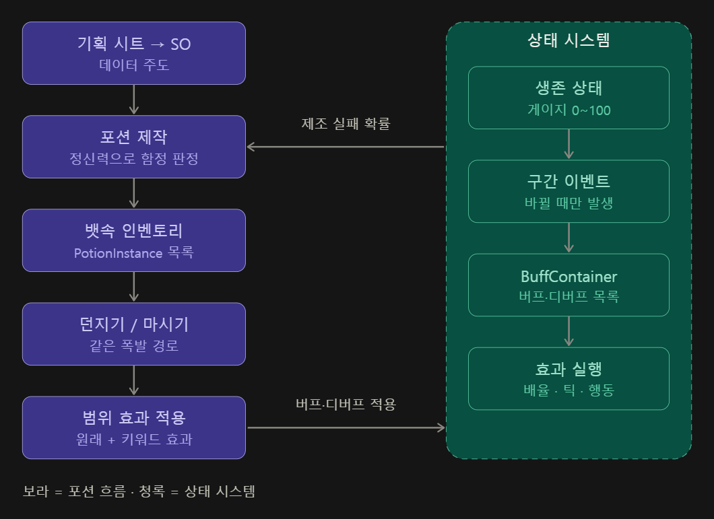
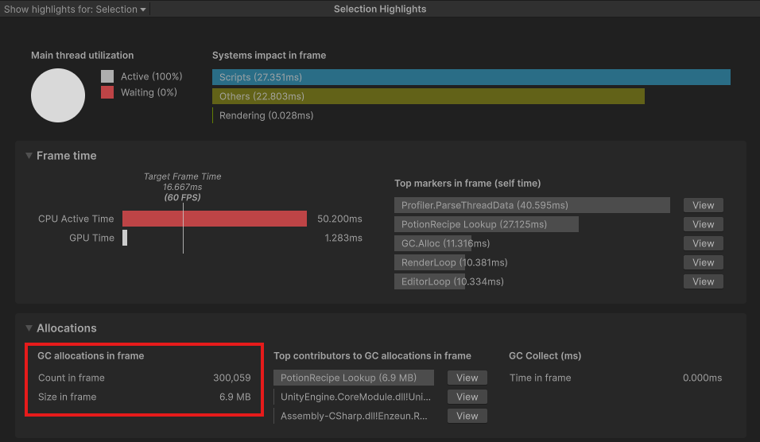
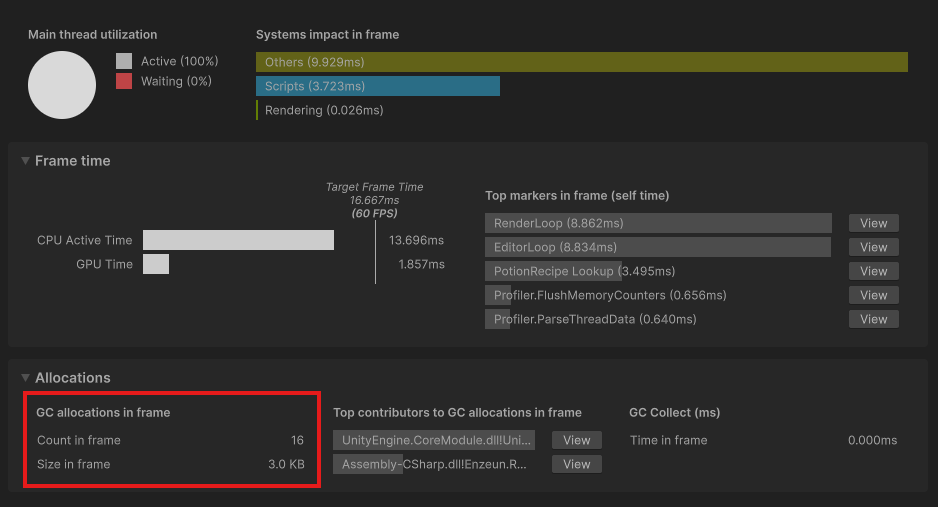
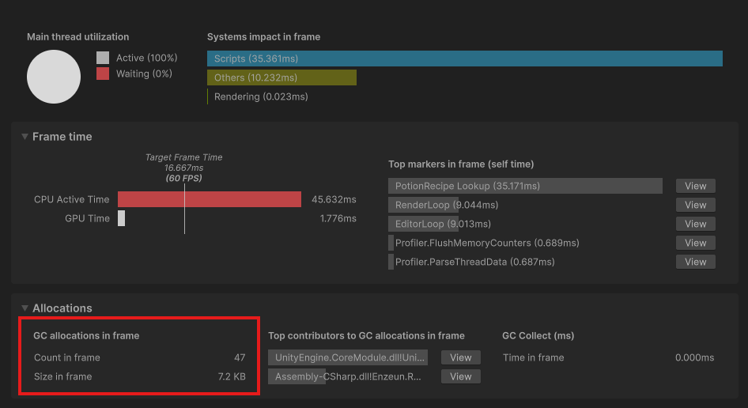

기업협약 팀 프로젝트 · CBT 제출 후 개발 중
NoMorePotion
포션 하나로 생존하는 멀티플레이 생존 액션. 기획 시트가 그대로 게임 데이터가 되고, 새 효과는 코드 수정 없이 데이터 조립으로 추가되는 구조를 만들었습니다.

- 기간
- 2026.11.02 ~ 진행 중 (CBT 빌드 제출 2026.11.12)
- 인원 · 역할
- 개발 4인 · 데이터 아키텍처, 기획자용 에디터 툴, 포션 조합/폭발/범위 장판, 생존 상태와 환경 지역, 버프/디버프, 함정 포션, 인벤토리(공용 · 개인/퀵슬롯 · 창고 · 시체 상자 · 바닥 재료), 멀티플레이 동기화(인벤토리 · 월드 오브젝트 · 포션 폭발), 월드 오브젝트 자동 배치, 개인 인벤토리·퀵슬롯·창고·상태 효과·흔들기 UI, 피격·폭발 피드백
- 기술
- Unity 6000.3 · C# · ScriptableObject · Odin Inspector · UniTask · Photon PUN 2 · Unity Profiler
- 기여 규모
- 2026.11.19 기준 커밋 110개(merge 제외, 팀 전체 404개) · 담당 영역 C# 93개 파일, 약 17,600줄(주석·공백 포함) · SO 에셋 약 180개 자동 생성
1. 이 프로젝트로 보여 드리는 것
| 강점 | 근거 | 결과 |
|---|---|---|
| 측정으로 증명한다 | 조합 조회 키 구조체의 박싱을 Profiler로 측정하고, IEquatable<T> 구현 후 다시 측정 | 10만 회 조회 기준 할당 300,059건 / 6.9MB → 할당 원인 목록에서 사라짐 |
| 기획이 직접 다루는 데이터를 만든다 | Odin 에디터 윈도우, 기획 시트(CSV) → SO 일괄 생성기, 효과 문장을 규칙 기반으로 해석 | 포션 72 · 재료 27 · 상태 효과 21 · 월드 오브젝트 43 생성, 포션 효과 276개 해석 실패 0건 |
| 확장에 닫히지 않는 구조 | 효과를 클래스가 아닌 모듈 조립([SerializeReference])으로 설계, 에디터는 인터페이스 + 제네릭으로 통합 | 새 데이터 종류 추가 시 에디터 수정 11줄, 함정 효과는 기존 폭발 경로에 인자 하나로 적용 |
| 네트워크를 모르는 규칙 코어 | 인벤토리·월드 오브젝트 규칙을 순수 C#으로 두고 PUN 연결은 얇은 껍데기로 분리 | 에디터 시뮬레이션 72개 + PUN 오프라인 Play 모드 40개 시험 통과 (동시 꺼내기 경쟁, 메시지 유실 후 복구, 늦은 입장 포함). 같은 코드가 CBT 싱글(오프라인 모드) 빌드에서 그대로 동작 |
| 권한을 상태의 주인에게 둔다 | 포션 폭발을 "내 플레이어는 각 기기가, 몬스터·월드 오브젝트는 방장이" 적용하도록 범위를 나눔 | 중복 대미지 없이 실제 온라인 2클라이언트에서 확인, 다른 기기 전용 버그 3건을 찾아 수정 |
| 보내지 않고 맞춘다 | 월드 오브젝트 배치를 동기화 메시지 대신 방장의 시드 하나로 모든 기기가 같은 결과를 계산하게 함. 기기마다 결과가 갈릴 수 있는 지점(난수, 순회 순서, 초기화 순서)을 미리 막음 | 오브젝트 30개를 위치 메시지 없이 배치, 로비부터 온라인 2클라이언트에서 배치와 소진 동기화 일치 확인 |
| 공유 데이터와 런타임 상태를 분리한다 | SO는 설정만, 남은 시간·횟수·틱 타이머·함정 여부는 런타임 인스턴스에 둠 | 여러 플레이어와 몬스터가 같은 SO를 써도 값이 오염되지 않음 |
2. 구조

- ID 대역으로 데이터 종류를 구분합니다: 포션 1xxxx / 재료 2xxxx / 월드 오브젝트 3xxxx / 함정 키워드 5xxxx / 상태 효과 6xxxx
- SO는 private 필드 + 읽기 전용 프로퍼티로 두고, ID 변경은
#if UNITY_EDITOR로 제한해 런타임 변조를 막았습니다.
3. 핵심 구현
① 기획자용 데이터 툴과 시트 → SO 일괄 생성
- 문제
- 재료·포션·월드 오브젝트마다 생성 버튼과 메서드가 복붙되어 있었고, 기획 시트의 수백 줄을 손으로 옮길 수 없었습니다.
- 판단
IItemData인터페이스와 제네릭(CreateButton<T>,CreateAsset<T>)으로 통합하고, CSV를 읽어 SO를 만드는 생성기를 따로 둡니다.- 결과
- 함정 키워드 SO를 추가할 때 에디터 수정은 11줄. "불 속성 대미지 250", "수분 + 5%" 같은 효과 문장 276개를 실패 0건으로 효과 모듈로 변환했습니다. 이미 있는 에셋은 덮어쓰지 않고, 생성 후 YAML을 직접 열어 값을 확인했습니다.
② 순서 무관 포션 조합 (O(1) 조회)
- 값 타입 구조체
PotionRecipeSet을 Dictionary 키로 쓰고,Math.Min/Max로 재료 ID를 정렬해 A+B와 B+A를 같은 키로 만듭니다. - 같은 포션 2개를 합치면 다음 등급(중 = 소+소, 대 = 중+중)이 되고, 대+대는 조합 타입 검사로 자연스럽게 거절됩니다.
- 성능 개선 과정은 4. 성능 측정에 정리했습니다.
③ 생존 상태 (체온 · 정신력 · 수분 · 포만감)
- 상태마다 변화 규칙이 달라 독립 매니저로 분리했습니다. 값은 0~100 정수이고, 변경은
Increase / Decrease / Reset로만 가능하며 세 경로 모두 구간 판정을 거칩니다. - 구간을 enum으로 표현하고
Normal을 0번에 두어, 초기값이 곧 정상 상태가 되게 했습니다. event Action<Prev, Next>는 구간이 실제로 바뀔 때만 발생합니다. 조건이 유지되는 동안 반복 호출이 없고, 사망 이벤트는 플래그로 한 번만 발생합니다.- 수분·포만감은 시간에 따라 줄고(더위엔 수분, 추위엔 포만감이 2배), 허기의 "아이템 소모"는 새 경로를 만들지 않고 인벤토리 요청 흐름(마스터 검증)을 그대로 씁니다.
- 환경 지역: 맵에 고정된 지역(더운 곳·추운 곳·동굴)에 들어서면 온도와 밝기 환경이 바로 바뀌고, 이에 따라 체온과 정신력이 변합니다. 온도와 밝기는 따로 지정해 "추운 지역 안의 동굴"처럼 겹칠 수 있고, 겹치면 안쪽(작은) 지역이 이깁니다. 각 기기가 자기 플레이어만 판정하므로 네트워크 메시지가 없고, 트리거 콜라이더 대신 박스 계산과 주기 검사를 써서 다른 탐지에 끼어들지 않고 사망·순간이동 때 빠지는 이벤트도 없습니다.
④ 버프/디버프 — 클래스를 늘리지 않는 효과 시스템
- 문제
- 디버프마다 클래스를 만들면 기획이 효과를 추가할 때마다 프로그래머가 필요합니다.
- 판단
- 효과 =
StatusEffectData(SO) + 조립식 모듈(수치 보정, 체력 증감, 주기 행동, 제조 실패 확률). 모듈은[SerializeReference]리스트와 Odin 타입 드롭다운으로 기획이 직접 조립합니다. - 결과
- 런타임은
BuffContainer가 맡습니다. 중첩 정책(Unique/RefreshDuration/StrongestWins), 곱연산 배율 캐싱, 건 주체(source) 기록으로 같은 디버프가 여러 출처에서 걸려도 서로 지우지 않습니다.
- 생존 상태 → 효과 자동 연결: 구간별 효과 표를 SO로 분리하고, 구간 전환 시 새 목록에 없는 효과만 제거하고 아직 없는 효과만 적용합니다. 유지되는 효과는 다시 걸지 않아 주기 타이머가 초기화되지 않습니다.
- 주기 행동(추위 이동 정지, 허기 아이템 소모 등): 컨테이너는 발동 시점만 관리하고 이벤트로 알리며, 실제 행동은 받는 쪽이 처리합니다.
- 틱이 필요한 효과가 있을 때만 컨테이너의
Update를 켜서, 몬스터가 많아도 유휴 컨테이너의 비용이 없습니다.
⑤ 포션 폭발과 함정 포션
- 범위 탐색(
PotionExplosion) / 대상 1개에 적용(PotionEffectApplier) / 던져진 오브젝트(Potion)로 책임을 나눴습니다.OverlapSphereNonAlloc과 재사용 버퍼로 할당 없이 탐색합니다. - 마시기 = 내 위치에서 폭발이므로 자신이 범위에 포함되어, 마시기 전용 로직이 필요 없습니다.
- 함정 포션: 제작 순간 정신력으로 실패를 판정해 원래 포션에 함정 키워드(13종)가 붙습니다. 같은 포션도 함정 여부가 다르므로 SO가 아닌
PotionInstance로 한 개씩 보관하고, 폭발 내부 함수에 키워드 인자 하나를 추가해 마시기·던지기 모두 같은 경로로 적용했습니다. - 실패 판정은
Random.Range(0, 100) < chance로, 0%면 항상 성공하고 100%면 항상 실패하도록 경계값을 맞췄습니다.
⑥ 인벤토리와 멀티플레이 동기화 (PUN 2)
요구: 재료·포션은 팀이 공유하고(어디서든 쓰는 공용 인벤, 베이스캠프에서만 여는 창고), 개인 인벤토리(10칸)는 죽으면 시체 상자가 된다. 월드 오브젝트의 남은 횟수는 모두가 같게 보여야 한다.
- 클라이언트 요청요청 번호 포함
- 마스터 검증상태는 바꾸지 않고 확정값 생성
- 전원 적용마스터도 같은 경로로 적용
- 사본 버전 +1어긋나면 전체 목록 재요청
- 보관 장소 5종을 한 가지 방식으로: 공용 인벤 · 개인 10칸 · 창고 · 시체 상자 · 바닥 재료 주머니를 모두
ContainerRef(종류, 번호, 칸)로 가리키고, 이동·조합·줍기·사망을 전부 "마스터 검증 한 번 + 변경 목록(절대값) 적용 한 번"으로 처리합니다. 보관 장소가 늘어도 동기화 경로는 늘지 않았습니다. - 개인 인벤토리도 마스터가 가지고 모든 기기가 복제합니다(화면에는 내 것만). 내 칸 안의 이동만 화면에 먼저 반영하고, 거부되면 전체 목록으로 바로잡습니다.
- 꺼내기는 위치가 아니라 ID로 요청해, 동시에 같은 포션을 집어도 먼저 도착한 한 명만 성공합니다. 랜덤과 ID 발급은 마스터만 합니다. 개인 10칸은 퀵슬롯(숫자 키 1~0)을 겸해 그 칸의 포션을 정확히 꺼냅니다.
- 각 기기는 씬 로딩이 끝난 뒤 "준비됨"을 보내 전체 목록을 받습니다. 처음 맞추기와, 사본이 어긋났을 때의 재동기화를 같은 경로로 처리합니다.
- 공용 인벤의 수량 변화는 한 번의 적용이 모두 끝난 뒤
(종류, ID, 변화량)이벤트로 모아서 알립니다. 팀원이 만든 획득·소모 알림창이 이 이벤트만 구독합니다. - 아이템은 byte 배열로 묶어 전송합니다(포션 한 개 = 8 byte). 길이가 맞지 않거나 모르는 ID면 예외 없이 실패하고, 값 범위 초과는
checked로 즉시 드러냅니다. - 시체 상자: 사망하면 개인 인벤토리를 먼저 비운 뒤(복제 방지) 같은 요청 흐름으로 공유 상자를 만들고, 공용 인벤과 창고는 그대로 남습니다. 상자는 E로 열어 개인 인벤으로 꺼냅니다. 창고와 시체 상자 모두 온라인 2클라이언트에서 동기화를 확인했습니다.
- 월드 오브젝트: 남은 횟수를 같은 구조로 동기화하고, 소진 시 드롭을 마스터가 한 번만 굴려 모두가 같은 재료와 개수를 받습니다.
- 검증 방법: 규칙 코어가 네트워크를 모르기 때문에 에디터에서 마스터 1 + 클라이언트 2를 흉내 내어 시험하고, PUN 오프라인 모드로 실제 RPC 경로까지 확인했습니다. PUN 소스를 읽어
RpcTarget.All이 로컬에서도 실행된다는 점을 확인하고 오프라인 시험의 한계를 파악했습니다.
⑦ CBT 빌드 (2026.11.12 제출)
CBT는 오프라인 모드 싱글 플레이로 제출했습니다. 규칙 코어를 네트워크와 분리해 둔 덕분에, 멀티플레이용 동기화 코드를 고치지 않고 그대로 썼습니다.
CBT에 맞춰 바닥 재료 주머니, 개인 인벤토리 UI, 상태 효과 아이콘 바, 포션 흔들기 UI, 피격·폭발 피드백, 범위 장판 포션을 추가했습니다.
⑧ 포션 폭발 멀티플레이: 상태의 주인이 적용한다
- 문제
- 폭발은 모든 기기에서 보여야 하지만, 효과를 모든 기기가 적용하면 대미지가 인원수만큼 겹치고, 던진 사람만 적용하면 남의 체력·버프를 대신 바꿔야 합니다.
- 판단
- 던진 기기가 폭발 순간의 정보만 RPC로 알리고, 모든 기기가 같은 경로로 폭발을 재생합니다. 효과는 그 상태를 가진 쪽만 적용합니다.
- 결과
- 범위 분리는 실제 온라인 방 2클라이언트로 확인했습니다. 이후 추가한 남의 플레이어 피격 연출과 공격력 배율은 아직 2클라이언트로 확인하지 않았습니다.
| 대상 | 누가 적용하나 | 이유 |
|---|---|---|
| 내 플레이어 | 각 기기 | 체력·버프·생존 상태를 각 기기가 가짐 |
| 몬스터 · 월드 오브젝트 | 방장만 | 한 곳에서만 차감해야 중복이 없음 |
| 남의 플레이어 | 적용 안 함 | 피격 몸 연출만 근사로 재생 |
- RPC에는 위치, 포션 ID, 함정 키워드, 던진 사람의 공격력 배율만 담습니다. 키워드는 폭발 순간에만 보내 날아가는 동안 함정 여부가 드러나지 않고, 배율은 받는 쪽에서 0~3으로 제한해 깨진 값이 와도 대미지가 터무니없어지지 않습니다.
- 시험용 진입 컴포넌트에 온라인 모드를 추가해, 같은 테스트 씬을 실제 Photon 방에서 2클라이언트로 돌릴 수 있게 했습니다.
⑨ 월드 오브젝트 자동 배치: 보내지 않고 같은 결과를 만든다
- 문제
- 판마다 채집물(월드 오브젝트)의 위치를 바꾸고 싶지만, 소진 동기화는 "모든 기기에서 같은 번호가 같은 오브젝트"라는 전제 위에 있습니다. 방장이 위치를 만들어 보내면 오브젝트 수만큼 메시지가 필요하고, 받기 전까지 기기마다 월드가 다릅니다.
- 판단
- 방장은 시드 하나만 방 프로퍼티로 공유하고, 각 기기가 같은 규칙으로 배치를 직접 계산합니다. 네트워크 번호도 "시작값 + 지역 번호 × 폭 + 뽑은 순서"로 정해 계산 결과가 같으면 번호도 같게 했습니다.
- 결과
- 지역마다 배치 테이블(가중치, 간격)과 개수만 정하면 되고, 지면 레이어·경사·NavMesh·배치 금지 구역을 검사해 놓을 수 없는 곳은 피합니다. 로비부터 온라인 2클라이언트로 오브젝트 30개의 배치와 소진 동기화가 일치하는 것을 확인했습니다.
기기마다 결과가 갈릴 수 있는 지점을 하나씩 막았습니다.
UnityEngine.Random(전역 상태) 대신 지역마다 시드로 만든System.Random을 쓰고, 시드를 섞을 때 프로세스마다 달라지는string.GetHashCode를 피했습니다.- 지역은
FindObjects순서가 아니라 인스펙터 목록 순서로 돌고, 자리를 못 찾아도 번호를 건너뛰어 뒤 번호가 밀리지 않게 했습니다. - 위치 판정에는 씬에 고정된 것(지면, NavMesh, 금지 구역)만 쓰고, 전체 배치를 계산한 뒤에 오브젝트를 만들어 방금 만든 것이 다음 판정에 끼어들지 않게 했습니다.
- 씬 에디터에서 시드를 넣고 결과를 미리 보는 버튼을 두어, Play 없이 같은 시드가 같은 결과를 내는지 확인할 수 있게 했습니다.
4. 성능 측정: 조합 키의 박싱 제거
- 발견
- 구조체 키에
IEquatable<T>가 없어 Dictionary가 기본 비교를 쓰고, 조회 1회당 약 3건의 힙 할당이 발생했습니다. - 측정
- 에디터 전용
[Button]테스트로 레시피 조회를 N회 반복하고 Profiler로 확인했습니다 (Unity 6000.3 에디터). - 결과
- 10만 회 기준 300,059건 / 6.9MB →
PotionRecipe Lookup이 할당 원인 목록에서 사라짐 (프레임 전체 16건 / 3.0KB)



코드 — 수정 전 / 수정 후
// 수정 전: 비교 방법을 제공하지 않아 Dictionary 가 기본 비교(박싱 가능)를 사용
public struct PotionRecipeSet
{
public int firstIngredientID;
public int secondIngredientID;
}
// 수정 후
public struct PotionRecipeSet : IEquatable<PotionRecipeSet>
{
public int firstIngredientID;
public int secondIngredientID;
public bool Equals(PotionRecipeSet other)
=> firstIngredientID == other.firstIngredientID
&& secondIngredientID == other.secondIngredientID;
public override bool Equals(object obj) => obj is PotionRecipeSet other && Equals(other);
public override int GetHashCode() => HashCode.Combine(firstIngredientID, secondIngredientID);
}5. 트러블슈팅
SO 데이터가 에디터 재시작 후 기본값으로 돌아감
- 현상
- Odin 툴로 입력한 값이 다음 날 초기값으로 되돌아갔습니다.
- 원인
[ShowInInspector]만 있고[SerializeField]가 없어, 표시·편집은 되지만 직렬화되지 않았습니다. 에디터가 켜져 있는 동안은 메모리 값이 남아 있어 발견이 늦었습니다.- 교훈
- "화면에 보이는 것"과 "저장되는 것"은 다릅니다. 이후 데이터 작업은
.assetYAML 확인을 검증 단계에 넣었습니다.
곱연산 중첩 수치가 기획 의도와 다름
- 현상
- 시야 −20%와 −90%가 겹치면 90%가 아니라 약 92%가 감소했습니다 (0.8 × 0.1 = 0.08).
- 해결
- 정수 퍼센트로 정확한 값(−87.5%)을 표현할 수 없어, 합이 가장 가까운 −88%로 기획과 조정했습니다.
- 교훈
- 곱연산은 "각 효과의 수치"와 "겹쳤을 때의 합"이 다르므로, 겹치는 구간은 합을 기준으로 검증합니다.
방장 기기에서만 폭발 이펙트가 약 3초 늦게 사라짐
- 현상
- 2클라이언트 시험에서 같은 10초 장판이 클라이언트에서는 정확히 10초, 방장에서는 약 3초 더 남았습니다. 코드 경로는 두 기기가 같았습니다.
- 원인
- 프로젝트 설정
Maximum Allowed Timestep이 0.02초로 되어 있어, 프레임이 이보다 길어지면Time.deltaTime이 잘려 게임 시간이 실제 시간보다 느리게 흘렀습니다. 프레임이 긴 기기에서만 생기는 문제라 방장 쪽에서만 드러났습니다. - 해결
- Unity 기본값(0.3333)으로 되돌리고 두 기기의 시간이 같아지는 것을 확인했습니다. "두 기기의 차이"를 초 단위로 재서 보고한 것이 코드가 아니라 설정을 의심하게 한 단서였습니다.
자동 배치한 오브젝트와 떨어진 재료가 주워지지 않음
- 현상
- 자동 배치한 오브젝트는 포션으로 깨지는데 E로 주워지지 않았고, 깨지고 나온 재료 주머니도 주워지지 않았습니다. 처음에는 손으로 배치할 때 쓰던 "네트워크 번호 자동 부여"를 거치지 않아서라고 의심했습니다.
- 원인
- 번호 문제였다면 포션 대미지(번호로 방장에게 요청)도 실패해야 합니다. 대미지는 되고 줍기만 안 되므로 줍기 탐지를 따라갔습니다. 줍기는 반경 안에서 트리거를 포함해 가장 가까운 콜라이더를 고르는데, 배치 지역의 큰 트리거 박스가 Default 레이어였습니다. 플레이어가 박스 안에 있으면 거리가 0이라 항상 그 박스가 대상으로 잡혀 주변의 오브젝트를 가렸습니다.
- 해결
- 지역과 금지 구역의 콜라이더는 배치 계산에만 쓰므로 계산이 끝나면 끄도록 했습니다. 이후 만든 환경 지역은 처음부터 콜라이더 없이 박스 계산으로 판정했습니다.
- 교훈
- "되는 것"과 "안 되는 것"이 거치는 경로를 비교하면 의심 범위가 빨리 좁혀집니다. 그리고 눈에 보이지 않는 트리거도 다른 시스템의 탐지 대상이 될 수 있습니다.
코드 검토로 먼저 막은 배치 결함
- NavMesh보다 배치가 먼저 실행될 수 있음: NavMesh는
OnEnable에서 등록되는데 배치를Awake에서 하면, 씬 로딩 중 오브젝트 사이의 순서가 정해져 있지 않아 판정이 전부 실패할 수 있습니다. 더 나쁜 것은 시드를 늦게 받는 기기는 NavMesh가 등록된 뒤에 계산해서 기기마다 결과가 달라지는 것입니다. 모든OnEnable이 끝난 뒤인Start로 옮기고, 실행 순서를 앞당겨 동기화 매니저의 등록보다 먼저 돌게 했습니다. - 오프라인 모드에서 두 번 배치될 수 있음: PUN 소스를 읽어 보니 오프라인에서는 방 프로퍼티 변경 콜백이 서버를 거치지 않고 그 자리에서 바로 불립니다. 시드를 정하는 도중에 다시 배치 함수로 들어오므로, "배치함" 표시를 시드 결정보다 먼저 하도록 순서를 바꿨습니다.
시험 중 발견한 인벤토리·네트워크 결함
- 시체 상자 요청에 null 칸을 넘기면 직렬화 단계에서 예외 → 빈 목록으로 보내 마스터가 "잘못된 요청"으로 거부하게 수정
- ID가 0인 포션이 시체 상자로 가면 풀 수 없어 내용이 사라질 위험 → 넣을 때 ID가 없으면 부여하도록 수정
- RPC를 받은 기기에는 포션 인스턴스가 없어 범위 장판에서 NullReference → 받은 기기도 포션·키워드로 인스턴스를 만들어 같은 방식으로 초기화
- 이펙트 반납을 방장만 실행하는 스케줄러에 맡겨 다른 기기에 장판이 남음 → 각 기기가
UniTask.Delay로 직접 반납 - 교훈: 규칙 문제는 에디터 시뮬레이션에서 먼저 잡히지만, "누가 실행하는가"의 문제는 실제 다중 클라이언트에서만 드러납니다.
6. 현재 상태와 다음 단계
검증 단계: 에디터 시뮬레이션(마스터 1 + 클라이언트 2) → PUN 오프라인 Play 모드 → CBT 싱글 빌드 → 실제 온라인 2클라이언트(포션 폭발, 월드 오브젝트 자동 배치·소진, 창고·시체 상자까지 확인). 3명 이상의 항목별 시험은 아직입니다.
설계 전제: 모든 플레이어가 함께 시작하고 중간 입장은 없으며, 방장이 나가거나 게임이 끝나면 방이 닫힙니다. 그래서 방장은 게임 내내 고정이고, 몬스터 체력·월드 오브젝트·ID 발급을 방장 권한으로 안심하고 둘 수 있습니다. 판마다 새 방이 만들어지므로 배치 시드도 판마다 새로 정해집니다.
- 다중 클라이언트 검증 확대: 3~5명으로 항목별 시험(공용 인벤·바닥 재료·퀵슬롯 포함)
- OBT 준비와 CBT 피드백 반영
- 출시 전 정리: 테스트 지급 끄기, 에디터 데이터 검증 버튼